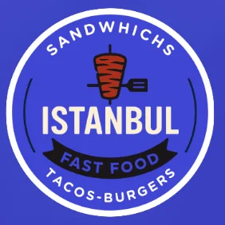

SIGNATURE
PAIN FRAIS · FAIT MAISON
Naan Classic
Kebab, crudités, Vache qui rit et nos sauces maison.

ISTANBULAUCAMVILLE · NAAN & BURGERS Commander en ligne ↗Des naans généreux, des burgers gourmands et des tacos préparés comme tu les aimes.
Kebab, crudités, Vache qui rit et nos sauces maison.
Deux steaks, cheddar fondant, oignons caramélisés.
Choisis tes viandes, tes sauces et tes suppléments.
Une envie de naan, de burger ou de tacos ? Passe nous voir à Toulouse ou commande pour profiter de nos recettes chez toi.
ADRESSE442 bis avenue de Fronton
Toulouse
TÉLÉPHONE05 32 53 85 76